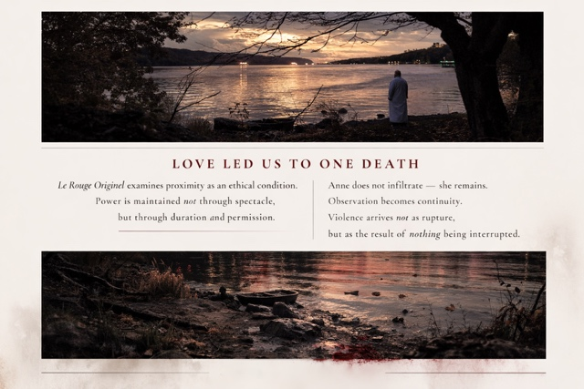

LOVE LED US TO ONE DEATH
Le Rouge Originel examines proximity as an ethical condition. Power is maintained not through spectacle, but through duration and permission.
Anne does not infiltrate — she remains. Observation becomes continuity. Violence arrives not as rupture, but as the result of nothing being interrupted.
How does a person become capable of sin?


Influenced by Chantal Akerman, Michael Haneke, and Krzysztof Kieślowski, the film resists psychological explanation. Stillness replaces escalation. Silence replaces cueing. The camera does not align, console, or condemn.
Casting Underway · Principal Photography Summer 2026